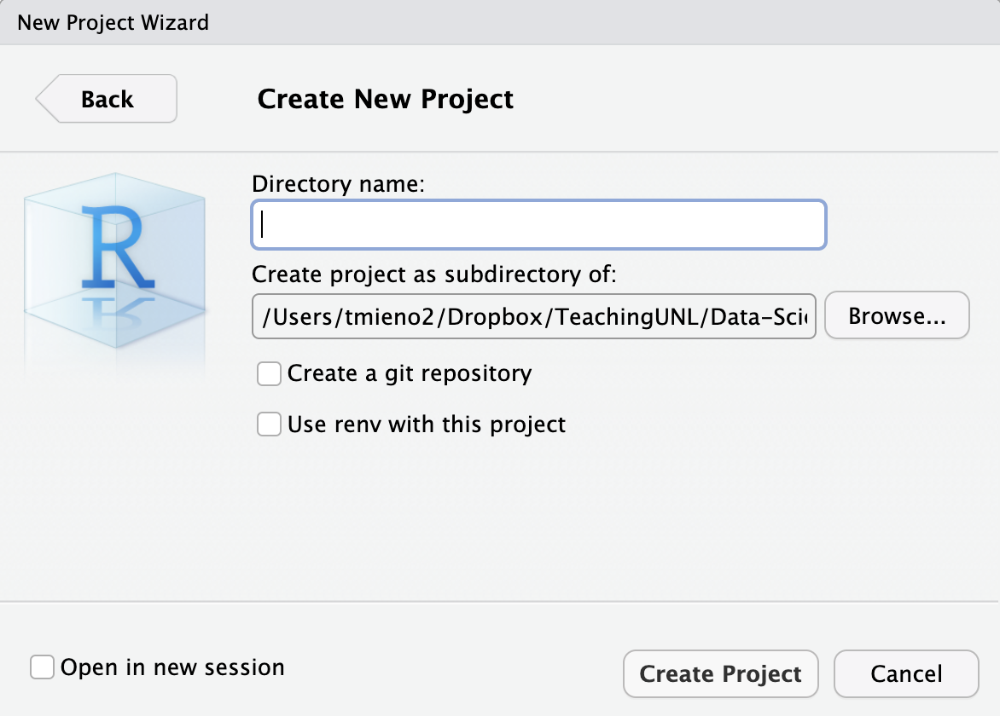
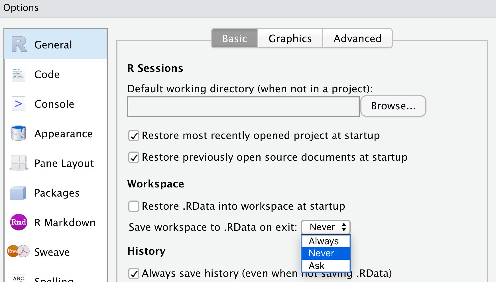

A research project runs for months or years and has many pieces: data files, code, figures, tables, the paper. An AI assistant can write any single piece of code in it. What it cannot do is:
Those four are your job. So today is about:
here and quarto packages if you have not already.here::here() for reading one file. This lecture builds on its slide “Condition 1: R can find the file”.corn_yields.csv (the corn data from 03-1). Every output shown is real. In the code that runs these examples, paths start from proj, the temporary project’s folder, instead of here::here(), and render_step() is a small function written for these slides that renders one .qmd in its own R session, as quarto render in a terminal does, and reports whether it worked.A research project is reproducible if anyone, including you a year from now, can produce exactly the same results from the same data by following what the project records.
The minimum requirement: every action taken on the data is recorded, so nobody has to guess a step. An action you took and did not record (deleting rows in Excel, renaming a column by hand, running a line at the Console and not saving it) is called a hidden action on these slides. A project with a hidden action is not reproducible, however tidy it looks.
Note
Reproducible is not the same as replicable (another team reaches the same conclusion with different data). This lecture is about reproducible only.
A project passes one test, and you can run it yourself:
If a step fails, it depended on something that was never recorded: a file made by hand, an object left in R’s memory, a step you ran once and forgot. Each of those is invisible until you delete the outputs and try.
Most research projects need the same few places. Folder names vary; what each one holds does not.
my-project/
my-project.Rproj marks the project root
README.md what the project is, and what to run in what order
data/
raw/ files exactly as you received them
processed/ files your code made from them
analysis/
01-clean.qmd one step per document, numbered in run order
02-merge.qmd
03-regression.qmd
results/ figures and tables your code saved
writing/ the paper or report| Part | What it holds | Required? |
|---|---|---|
.Rproj file |
Marks the top of the project (the project root). here::here() builds every path from it. |
Yes |
data/raw/ |
Data as you received it. Your code reads it and never writes to it. | Yes, if you have data |
data/processed/ |
Tables your code made. Can be deleted and rebuilt at any time. | Yes, once any step saves a table |
analysis/ |
The code, one .qmd per step |
Yes |
results/ |
Figures and tables for the paper. Can be deleted and rebuilt. | Once you save any |
README.md |
A short text file saying what the project is and how to rerun it | Strongly recommended |
writing/ |
The paper, if you write it in the project | No |
AI assistants and other people’s projects use other names for the same places. They change how the folder looks, not what it does:
Code/, R/, scripts/ or src/ for analysis/Data/Raw/ and Data/Processed/, data-raw/ and data/, or input/ and output/ for the two kinds of dataoutput/, figures/ or tables/ for results/.R scripts instead of .qmd documentsWhat to look for in any of them: one place for data you received, a separate place for data the code made, and code whose names tell you the order.
Lecture 03-1 used the smallest version of this pattern: a project with data/ and analysis/. That is enough while your code only reads files.
Split data/ into raw/ and processed/ as soon as any step saves a table. From then on, a file’s folder tells you whether you can delete it.
An R Project is a folder with a .Rproj file in it. In RStudio: File, New Project, New Directory, New Project. RStudio writes the .Rproj file and opens a fresh R session in that folder.
Important
here recognises a .Rproj file only if its first line starts with Version:. Every .Rproj that RStudio creates has that line. An empty file named something.Rproj, made any other way, does not count, and here::here() then points at the wrong folder.

data/raw/ and writes somewhere else.Important
Like the silent failures in 03-1, these are why checking matters. A project that runs is not the same as a project that rebuilds.
In 03-1, Condition 1 was about one file. In a project, every step reads from one folder and writes to another, so every path in every step is built the same way:
| Part | What it is |
|---|---|
here::here( |
Finds the project root by looking for the .Rproj file, starting from wherever R is |
"folder", "subfolder" |
The folders below the root, one piece each, in order |
"file name" |
The file, last |
The result is the full path, correct on any computer that has the project.
A .qmd file runs with its own folder as the working directory (the folder R is in, see 03-1). Every step lives in analysis/, so a typed path such as "data/raw/corn_yields.csv" is looked for in analysis/data/raw/, which does not exist.
| Written as | At the Console of the project | When analysis/01-clean.qmd is rendered |
|---|---|---|
"data/raw/corn_yields.csv" |
works | fails: no such file |
"../data/raw/corn_yields.csv" |
fails | works |
here::here("data", "raw", "corn_yields.csv") |
works | works |
.. means “the folder above”. It works in one place and not the other, which is why here::here() is the one to use.
setwd("C:/Users/yourname/..."): changes the working directory to a folder that exists only on one computer."/Users/yourname/Desktop/corn.csv": the same problem, without setwd().data/raw/.Raw data is a file as you received it: downloaded, sent by a coauthor, typed in from a paper form. Processed data is a file your code made. The test for which is which:
If you deleted it, could you get it back by rerunning your code?
Yes: processed, and it goes in data/processed/. No: raw, and it goes in data/raw/, untouched.
| File | Which |
|---|---|
| A csv downloaded from USDA | raw |
A table your cleaning step saved as .rds |
processed |
| A figure saved by your code | a result, in results/ |
| A survey you typed in from paper forms | raw, with a note in the README saying where it came from |
| The USDA csv after you converted a column to metric by hand in Excel | neither: a hidden action. Keep the original as raw, and do the conversion in a step |
Every step that changes data reads from data/raw/ (or data/processed/) and writes to data/processed/. The example project’s cleaning step does that. The check below compares a fingerprint of the raw file (a short code computed from its contents, which changes when the contents change) before and after the step runs:
raw_file <- file.path(proj, "data", "raw", "corn_yields.csv")
before <- tools::md5sum(raw_file)
step <- render_step(file.path(proj, "analysis", "01-clean.qmd"))
after <- tools::md5sum(raw_file)
cat(
paste("step 01 rendered: expected TRUE, got", step$ok),
paste("raw file unchanged: expected TRUE, got", unname(before == after)),
sep = "\n"
)step 01 rendered: expected TRUE, got TRUE
raw file unchanged: expected TRUE, got TRUEA step is one document that does one job: it reads its inputs from files, does the job, saves its outputs to files, and checks them. Whatever the job, a step follows the same pattern.
| Part | What it is | Required? |
|---|---|---|
| read | Every input comes from a file, by a path built with here::here(): data/raw/ or data/processed/ |
Yes |
| one job | Clean, merge, estimate, draw: one thing you can name in a few words | Yes |
| write | Every output another step needs is saved to a file, in data/processed/ or results/ |
Yes, if a later step uses it |
| check | Prints what you expected and what you got | Strongly recommended |
| Step | Reads | Writes |
|---|---|---|
01-clean.qmd |
data/raw/ |
data/processed/ |
02-merge.qmd |
data/processed/ (two or more tables) |
data/processed/ |
03-regression.qmd |
data/processed/ |
results/ (a table of estimates) |
04-figures.qmd |
data/processed/, results/ |
results/ (figures) |
The files are how one step hands its work to the next. A reader of the project can see every hand-over by looking at the folders.
Rendering a .qmd runs it from the top in a fresh R session (02-1, “Working with AI on your own research”). So a step that uses an object it never read or made fails at render, even if the same code works at the Console because the object happens to be there.
Here the example project’s summary step is changed so that it uses irrigated without reading it, as if the cleaning step had left it in memory:
step rendered: FALSE error message: ! object 'irrigated' not found The render fails with an error naming the missing object. That is the good outcome: it shows the step was not reproducible, today, instead of a year from now.
By default RStudio saves the objects in your Environment pane to a file called .RData when you quit, and loads them back when R starts. Objects that come back were made by code you may since have changed, so code can appear to work only because an object it needs is still there.
Turn it off once: Tools, Global Options, General. Untick Restore .RData into workspace at startup, and set Save workspace to .RData on exit to Never.

Number each step’s file name in the order it runs: 01-clean.qmd, 02-merge.qmd. Then listing the folder in alphabetical order lists the steps in run order, and nobody has to ask.
Use two digits from the start. File names are sorted as text, character by character, so without the leading zero, step 10 comes before step 2:
A run-all script is one file at the project root that renders every step in order. It turns “the order is written down” into “the order runs”. Whichever function the AI uses, it follows this pattern:
| Part | What it does |
|---|---|
list.files(..., pattern = "\\.qmd$") |
Lists every .qmd in analysis/, in alphabetical order, which the numbers make the run order |
for (step in steps) |
Repeats the next line once for each file |
quarto::quarto_render(step) |
Renders one step in its own fresh R session, and stops everything with an error if that step fails |
If analysis/ also holds documents that are not steps (notes, a worksheet), the pattern must exclude them, for example by listing only names that start with two digits: pattern = "^[0-9]{2}-.*\\.qmd$".
Packages change. An update can change a default or remove a function, so the same code can give a different number a year later. The renv package records the version of every package the project uses in a file called renv.lock at the project root.
renv::init(): start recording, once per projectrenv::snapshot(): write the versions you use now into renv.lock; run it after installing or updating a packagerenv::restore(): install exactly the versions in renv.lock; what someone rebuilding your project runs firstEverything in data/processed/ and results/ was made by code, so all of it can be deleted. The run-all pattern then renders both steps from the raw data, and the check compares what came back with what was there before:
invisible(render_step(file.path(proj, "analysis", "02-summary.qmd")))
made_before <- list_outputs()
mean_file <- file.path(proj, "results", "mean-yield.csv")
mean_before <- round(read.csv(mean_file)$mean_yield, 1)
unlink(file.path(proj, "data", "processed", "*"))
unlink(file.path(proj, "results", "*"))
cat("files left after deleting:", length(list_outputs()), "\n")files left after deleting: 0 steps <- list.files(file.path(proj, "analysis"), pattern = "^[0-9]{2}-.*\\.qmd$", full.names = TRUE)
for (step in steps) render_step(step)
cat(
paste("files rebuilt: expected", paste(made_before, collapse = ", "),
"got", paste(list_outputs(), collapse = ", ")),
paste("average irrigated yield: expected", mean_before,
"got", round(read.csv(mean_file)$mean_yield, 1)),
sep = "\n"
)files rebuilt: expected irrigated.rds, mean-yield.csv got irrigated.rds, mean-yield.csv
average irrigated yield: expected 181.6 got 181.6Both files came back, with the same number in them. Run this test once in the middle of a project, not only at the end, when a failure is still easy to trace.
The way of working from lecture 02-1 (“Working with AI on your own research”) fits a project laid out like this one: you ask for one step, naming what it reads, what it writes and which checks to print; the AI writes into that step’s .qmd, with one plain-English sentence above each chunk; you render the step and read the HTML.
What the layout adds:
.qmd and its HTML are a record of one job, small enough to read in a few minutes.Note
Every request that asks for code ends with the same few lines, the closing instructions from 03-1. The full text is under Recommended requests near the end.
The AI sees only what you show it. For a project, it needs:
.qmd the code goes into, and the one job it does.data/processed/ or results/; no setwd().Most of the layout and rules are the same in every request. Write them once, in a short file at the project root that the AI can read:
# About this project
Corn yield response to irrigation, Nebraska counties, 2008.
# Layout
data/raw/ data as received. Read only: no code writes here.
data/processed/ tables made by the steps; can be deleted and rebuilt.
analysis/ one .qmd per step, numbered in run order.
results/ figures and tables for the paper.
# Rules
Build every path with here::here(). No setwd(), no absolute paths.
Every step reads files and writes files.CLAUDE.md at the project root automatically at the start of every session; other agents have their own file name for the same purpose.Keep it short and current: an out-of-date rule in it gets followed.
The AI does not know the layout, so it guesses. A typical reply puts everything in one script, sets the working directory, and saves over the file it read:
The fourth line replaces the raw file with the cleaned one. The next run reads the cleaned file as if it were raw, and nothing says so.
An example for a project laid out as on these slides:
My project has data/raw/ (read only), data/processed/, analysis/ and
results/. Write one step, the cleaning step. It reads
data/raw/corn_yields.csv, keeps only the irrigated rows (Irrigated is
1), and saves the result as data/processed/irrigated.rds. It must not
write anything to data/raw/. Check the number of rows (I expect 74,
from counting the irrigated rows in the raw file).
Put the code in my Quarto document analysis/01-clean.qmd, under the
heading "Clean", as R code chunks. Above each chunk, write one
plain-English sentence saying what it does and why. Build every path
with here::here(); no setwd(), no absolute paths. Print each check on
its own line as "name of check: expected X, got Y". Render the document
to HTML.The rendered HTML of analysis/01-clean.qmd in the example project. Read each sentence, then check that the chunk under it does what it says and follows the project’s rules.
Clean
Read the raw yields and keep only the irrigated fields, since the analysis is about irrigated corn.
library(readr)
library(dplyr)
corn <- read_csv(here::here("data", "raw", "corn_yields.csv"), show_col_types = FALSE)
irrigated <- filter(corn, Irrigated == 1)Save the cleaned table for the next step.
Check the number of rows against the count of irrigated rows in the raw file.
Rendered, it printed:
irrigated rows: expected 74, got 74 The step reads from data/raw/, writes only to data/processed/, builds both paths with here::here(), and the check matches.
Each check tests one condition. You know the right answer to each before you run it:
| Check | Condition | What you expect | |
|---|---|---|---|
| 1 | Search the project’s code for setwd(, C:/, /Users/ and ~/ |
1 | none found |
| 2 | Fingerprint of every file in data/raw/, before and after running a step |
2 | unchanged |
| 3 | Restart R, then render each step on its own | 3 | every step renders |
| 4 | Delete data/processed/ and results/, run the run-all script |
3 and 4 | every file comes back |
| 5 | For every file in data/processed/ and results/, the step that writes it |
2 and 4 | one step for each file |
Check 5 finds files made by hand: a file that no step writes is a hidden action.
Check my project. Search every .qmd and .R file for setwd(), and for
paths starting with C:/, /Users/ or ~/. Then, for every file in
data/processed/ and results/, name the step that writes it.
Put the code in my Quarto document <path to your .qmd>, under the
heading "<heading>", as R code chunks. Above each chunk, write one
plain-English sentence saying what it does and why. Build every path
with here::here(); no setwd(), no absolute paths. Print each check on
its own line as "name of check: expected X, got Y". Render the document
to HTML.The example project, with one more step added the way the weak request on the previous slide would have written it:
writeLines(
c("```{r}", "setwd(\"C:/Users/yourname/Documents\")", "```"),
file.path(proj, "analysis", "03-extra.qmd")
)
code_files <- list.files(proj, pattern = "\\.(qmd|R)$", recursive = TRUE, full.names = TRUE)
pattern <- "setwd\\(|\"C:/|\"/Users/|\"~/"
hits <- unlist(lapply(code_files, function(f) {
lines <- readLines(f)
if (any(grepl(pattern, lines))) basename(f)
}))
cat("files with setwd() or an absolute path: expected 0, got", length(hits), "\n")files with setwd() or an absolute path: expected 0, got 1 [1] "03-extra.qmd"The check fails, and names the file to fix. Passing it would not prove that the project rebuilds; failing it proves that it does not, on any other computer.
A student asked an AI to “add the regression to my project”, and got this in analysis/03-regression.qmd:
A. What does each of the five lines do?
B. Which line will fail on your computer, and why?
C. Which line destroys something the project cannot get back?
D. Which line works at the student’s Console but fails when the document is rendered? Why?
E. Rewrite the request so the AI could not make these mistakes.
A. Changes the working directory; reads the raw yields; drops rows with a yield of 0 or less; saves the table over the raw file; fits a regression of yield on irrigation and rainfall using a table called corn_weather.
B. Line 1. The folder /Users/jsmith/thesis exists only on jsmith’s computer.
C. Line 4. It replaces the raw file with the filtered one. The dropped rows are gone, and nothing records that they existed.
D. Line 5. corn_weather is not read or made anywhere in this document. It exists at the Console only because another step, or the Console, left it in memory. Rendering starts a fresh session, so the object is not found.
E. Name the step and its one job, the files it reads (data/processed/ for the merged table) and writes (results/), say that data/raw/ is read only, and end with the closing instructions.
Copy one, then replace every <...> with what you know about your project. Every request for code ends with the closing instructions.
The lines that end every request for code. Replace the two blanks; leave “expected X, got Y” as it is, because it tells the AI how to print each check:
Put the code in my Quarto document <path to your .qmd>, under the
heading "<heading>", as R code chunks. Above each chunk, write one
plain-English sentence saying what it does and why. Build every path
with here::here(); no setwd(), no absolute paths. Print each check on
its own line as "name of check: expected X, got Y". Render the document
to HTML.A chat assistant cannot render: paste its chunks into your .qmd and render it yourself. An agent in your editor or terminal can do every step.
Help me organise my research project <project folder name>. It should
have data/raw/ for data as I received it, data/processed/ for tables
my code makes, analysis/ for one .qmd per step, numbered in run order,
and results/ for figures and tables. Here is what is in the folder now:
<paste the list of files>
For each file, tell me where you would put it and why, and list any
file you cannot place without asking me. Do not move or change
anything until I agree.My project has data/raw/ (read only), data/processed/, analysis/ and
results/. Write one step: <the one job this step does>. It reads
<input files, with paths from the project root> and saves
<output files, with paths from the project root>. It must not write
anything to data/raw/. Check <what you expect, and the number you
expect>.
Put the code in my Quarto document <path to your .qmd>, under the
heading "<heading>", as R code chunks. Above each chunk, write one
plain-English sentence saying what it does and why. Build every path
with here::here(); no setwd(), no absolute paths. Print each check on
its own line as "name of check: expected X, got Y". Render the document
to HTML.Write a script run-all.R at my project root that renders every .qmd
in analysis/ whose name starts with two digits, in the order of those
numbers, each in its own R session, and stops at the first step that
fails. run-all.R is a plain R script. Then write the check, as code in
the Quarto document named below: delete everything in data/processed/
and results/, run run-all.R, and list the files that came back. I
expect <the files that should come back>.
Put the code in my Quarto document <path to your .qmd>, under the
heading "<heading>", as R code chunks. Above each chunk, write one
plain-English sentence saying what it does and why. Build every path
with here::here(); no setwd(), no absolute paths. Print each check on
its own line as "name of check: expected X, got Y". Render the document
to HTML.Check my project. Search every .qmd and .R file for setwd(), and for
paths starting with C:/, /Users/ or ~/. Record a fingerprint (md5) of
every file in data/raw/, render every step, and compare the
fingerprints. For every file in data/processed/ and results/, name the
step that writes it.
Put the code in my Quarto document <path to your .qmd>, under the
heading "<heading>", as R code chunks. Above each chunk, write one
plain-English sentence saying what it does and why. Build every path
with here::here(); no setwd(), no absolute paths. Print each check on
its own line as "name of check: expected X, got Y". Render the document
to HTML.Explain this R code to me. For each line, write one plain-English
sentence. Then list:
1. any line that would only work on the computer it was written on
2. any line that writes to a file it, or an earlier step, read from
3. any object it uses that it never reads from a file or makes itself
<paste the code here>| You need to understand | The AI can write |
|---|---|
| What reproducible means, and the test that shows it | The run-all script that runs the test |
| Which of your files are raw, and that nothing writes to them | The steps that read raw and write processed |
| What one step’s job is, and which files it reads and writes | The code inside the step |
| Why a step must not use objects left in memory | The reading and saving lines |
| The order of the steps | The numbered file names, once you give the order |
| What your project’s layout and rules are | Nothing: you write them down, once |
For every project: keep raw data untouched, one .qmd per step that reads files and writes files, numbered in run order, with every path built by here::here(). Tell the AI the layout and the step, and run the test (delete what code made, rerun, compare) before you trust the results.